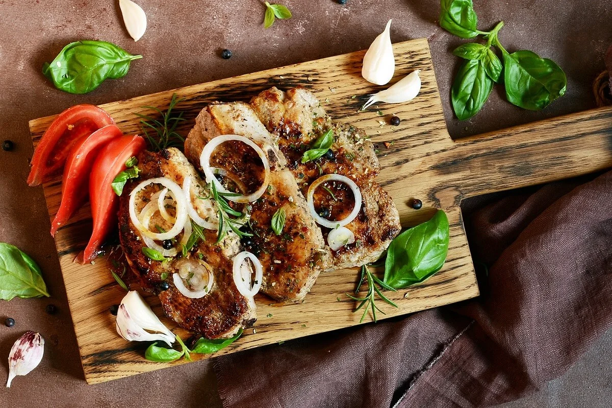

Envia tu receta
Recetas Mundiales
Julian M. Corredor G.
Nuestras mejores recetas
Pasta Boloñesa
Total: 1 hora
Preparacion: 25 minutos
Cooking: 30 minutos
Posta Negra
Total: 2 Horas 30 minutos
Preparacion: 1h 20 minutos
Cooking: 1 hora 10 minutos
Salsa de Ajo
Total: 10 minutos (+ 1 hora de reposo)
Preparacion: 5 minutos
Cooking: 5 minutos
Estofado de Res
Total: 55 minutos
Preparacion: 30 minutos
Cooking: 25 minutos

Bistec Encebollado
Total: 45 minutos
Preparation: 20 minutos
Cooking: 25 minutos
Bistec a Caballo
Total: 1h 30 minutos
Preparation: 30 minutos
Cooking: 1hora
^